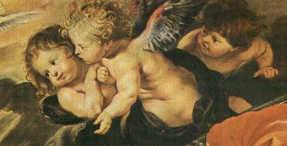
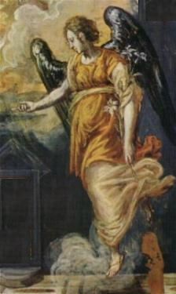
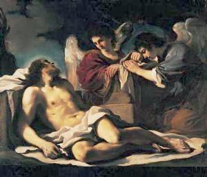
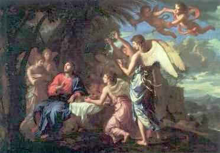

A CRIAÇÃO
DEUS criou tudo o que existe: o
Céu, os astros, a Terra, os animais, as aves, as
florestas, os mares e toda humanidade. Criou as pessoas
à sua imagem e à sua semelhança, concedendo-nos uma quantidade
notável de graças, virtudes e o "livre arbítrio" , ou seja,
a plena liberdade de ações, movimentos e pensamentos, a fim de que
tivéssemos a sensibilidade de entendermos a Bondade Divina e
procurássemos o CRIADOR, nos conduzindo e vivendo conforme a
Vontade do PAI ETERNO. Envolvidos pelo Amor de DEUS, fomos criados
para vivermos como irmãos e amarmos em plenitude, porque é justamente
através da grandeza do amor das pessoas, que nos tornamos à imagem
e à semelhança do CRIADOR. Significa dizer que somente exercitando
o amor sincero, dedicado e não interesseiro, as pessoas alcançarão
o discernimento e seguirão a vereda do bem, da justiça e da fraternidade,
retribuindo ao SENHOR um pouco das preciosas graças que diariamente
ELE derrama sobre cada um de nós, impulsionando, colaborando,
protegendo a nossa vida, inclusive proporcionando alegria
e felicidade.
Com o objetivo de ajudar a humanidade
na caminhada existencial, o PAI ETERNO criou os Anjos, para
iluminar as nossas decisões, defender-nos contra os perigos que
ocorrem no cotidiano e guiar-nos através da vida, a fim de podermos
cumprir dignamente a missão que ELE Mesmo nos confiou e assim,
depois de alcançarmos êxito em nosso "tempo terrestre", caminharmos
para a eternidade e usufruirmos de seu maravilhoso Amor de PAI,
de sua adorável companhia e de sua tão querida amizade.
Os Anjos são seres espirituais
e receberam dons e virtudes especiais do CRIADOR, a fim de poderem
servi-LO com eficiência e exatidão, executando fielmente as ordens
Divinas e colaborando no governo do universo.
 O SENHOR também
lhes concedeu o "livre
arbítrio" , da mesma maneira que fez
conosco, para que eles tenham a liberdade de escolher qual a melhor
maneira de atuar no cumprimento de suas missões, a fim de realiza-las
com empenho e perfeição, fazendo de seu trabalho, um modo visível
de revelar os seus sentimentos e o seu imenso amor a DEUS. Isto
porque, vivendo em permanente comunhão de amor com o CRIADOR
e desfrutando da adorável Visão Beatífica, é justamente através do
exercício de suas missões que terão o ensejo de mostrar a grandeza
de seu desempenho e a plenitude de seu amor a DEUS.
O SENHOR também
lhes concedeu o "livre
arbítrio" , da mesma maneira que fez
conosco, para que eles tenham a liberdade de escolher qual a melhor
maneira de atuar no cumprimento de suas missões, a fim de realiza-las
com empenho e perfeição, fazendo de seu trabalho, um modo visível
de revelar os seus sentimentos e o seu imenso amor a DEUS. Isto
porque, vivendo em permanente comunhão de amor com o CRIADOR
e desfrutando da adorável Visão Beatífica, é justamente através do
exercício de suas missões que terão o ensejo de mostrar a grandeza
de seu desempenho e a plenitude de seu amor a DEUS.
Os Anjos não são autômatos, tem
sentimentos e vontade própria, são seres totalmente livres, que atuam segundo
o seu próprio desejo, da mesma maneira que não existe qualquer tipo de barreira
que os impeçam de optar e escolher o que querem. São muito mais perfeitos
que a humanidade, possuem inteligência aguçada e perspicaz, vontade
indômita e irrevogável. Significa dizer que o seu "querer" não tem fronteiras e nem recuos.
Aquilo que desejam, querem mesmo e para sempre, com firmeza e decisão.
Além de virtudes especiais e dons sobrenaturais,
possuem também o dom Divino de materialização, ou seja, os Anjos no
cumprimento de uma missão, podem assumir o aspecto e a fisionomia humana,
possibilitando-os inclusive de conviverem com as pessoas.
Com a intenção de testemunhar que os
Anjos tem sentimentos, vamos colocar em evidência um fato acontecido durante as
Aparições de NOSSA
SENHORA em Garabandal, na Espanha, de 1961 a 1965.
Padre Valentim descreve em seus apontamentos,
que um visitante queria entregar um objeto a Conchita (uma das Videntes) para ser
beijado por NOSSA SENHORA (era uma prática que maternalmente a VIRGEM
MARIA estava atendendo). Aproximou-se da menina e lhe deu um bonito terço de
metal com a solicitação. A Vidente sabendo que naquele "dia das Aparições" quem viria era o Arcanjo
Miguel, nem quis pegar no Terço. Diante do espanto do homem, ela explicou:
"O Anjo não beija".
E porque não? Perguntou o homem. Conchita sorrindo disse: "Só NOSSA SENHORA é que beija! Neste assunto de beijos o Anjo não
entende".
Dias após, no primeiro encontro das meninas
Videntes com o Arcanjo, ele mostrou-se muito mais familiar e carinhoso do que de
costume! Escreveu Conchita em seu Diário:
"Beijou-nos nas faces e na fronte, pela ordem em que nos encontrávamos,
em fila".
Com certeza,
"sem qualquer ressentimento", o Arcanjo quis mostrar
a Conchita, que ele também sabia ser carinhoso a maneira dos humanos e que portanto,
"também entendia do assunto de
beijos", fazendo com que a menina reformulasse o
seu juízo a respeito do sentimento dele.
Anjo significa "mensageiro" a serviço de DEUS, com as funções específicas de
anunciar à humanidade a Vontade Divina, corrigir alguma falta ou
um conhecimento errôneo nas pessoas, ensinar, repreender, punir em
nome do SENHOR e consolar os necessitados.
Da mesma forma que as pessoas, os Anjos
foram criados para servir e glorificar o CRIADOR. Enquanto os
homens falham em seus bons propósitos, os Anjos nunca
falham, cumprem fielmente a Vontade do SENHOR.
JESUS E OS
ANJOS
CRISTO é o centro do mundo
Angélico. Em
outras palavras, os Anjos são de CRISTO, porque foram
criados por ELE e para ELE. Sendo ELE a Segunda Pessoa da
Santíssima Trindade, o FILHO DE DEUS que com o PAI ETERNO e o
ESPÍRITO SANTO constituem a TRINDADE SANTA, o Único e Mesmo
DEUS UNO e TRINO, que sempre existiu, criou os Anjos
como manifestação natural e espontânea de seu exuberante e
generoso Amor, para auxiliar na administração celeste e
primordialmente, ajudar na salvação das pessoas. São Paulo
na Carta aos Colossenses escreveu:
"... porque NELE
(em JESUS)
foram criadas todas as coisas, nos Céus e na Terra, as visíveis
e as invisíveis: Tronos, Dominações (Soberanias)
, Principados, Potestades
(Autoridades), tudo foi criado por ELE e para ELE". (Cl 1,16)
Na Carta aos Hebreus o Apóstolo afirma
que JESUS é o resplendor da glória e a expressão do PAI
ETERNO, e que ELE colocou os Anjos para serem mensageiros
de seu Projeto Divino de Salvação da humanidade:
"Porventura, não são
todos eles (os Anjos) espíritos servidores, enviados ao
serviço dos que devem herdar a Salvação?" (nós os filhos de DEUS) (Hb 1,l4)
Além dos diversos textos que se encontram
nas Cartas de São Paulo sobre os Anjos, o Apóstolo São Mateus
também escreveu:
"Quando o FILHO
DO HOMEM (JESUS) vier em sua glória, e todos os
Anjos com ELE, então se assentará no trono da sua
glória". (Mt 25,31)

Observa-se pela Sagrada
Escritura, desde a Encarnação do VERBO até a Ascensão Gloriosa de
JESUS aos Céus, como ELE foi envolvido pela fervorosa adoração e pela
imediata prestação de serviços dos Santos Anjos. Na carta que enviou
aos Hebreus, São Paulo escreveu a Ordem dada pelo CRIADOR,
a respeito da vinda ao mundo do FILHO DE DEUS que se Encarnou
em JESUS de Nazaré:
"Adorem-No
(o SENHOR JESUS) todos os Anjos de DEUS".
(Hb 1,6)
Assim, desde o Nascimento, durante a
Infância e na Juventude, ao longo da Vida Pública do SENHOR JESUS,
os Anjos O protegeram e jamais se afastaram DELE. Serviram
a CRISTO no deserto, reconfortaram-NO na agonia no Jardim
do Getsêmani e anunciaram a Boa Nova da Ressurreição.
Por isso mesmo, estando os Anjos
tão ligados a CRISTO e à sua Missão Redentora para a maior glória
do PAI ETERNO, também estão sempre acompanhando o SENHOR JESUS
com uma presença ativa e constante na Igreja.

Próxima
Página
 Retorna ao Índice
Retorna ao Índice